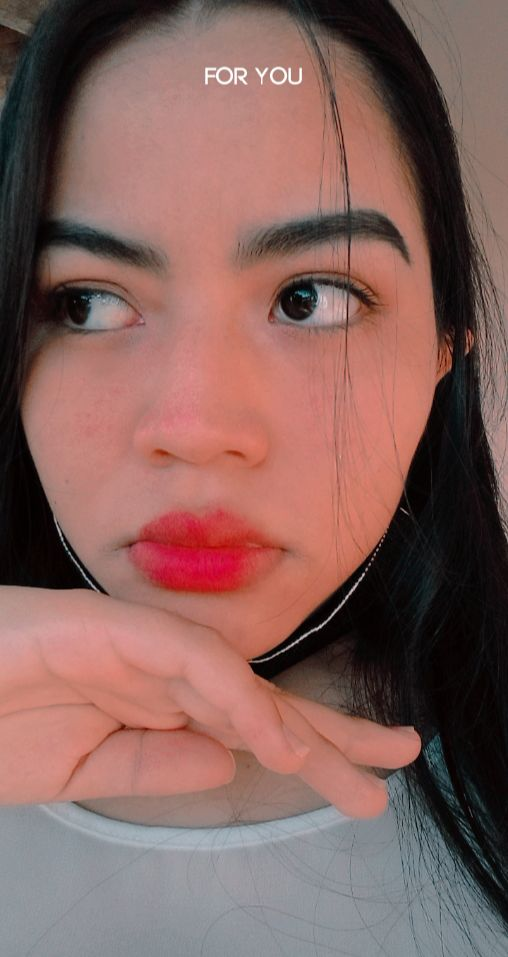
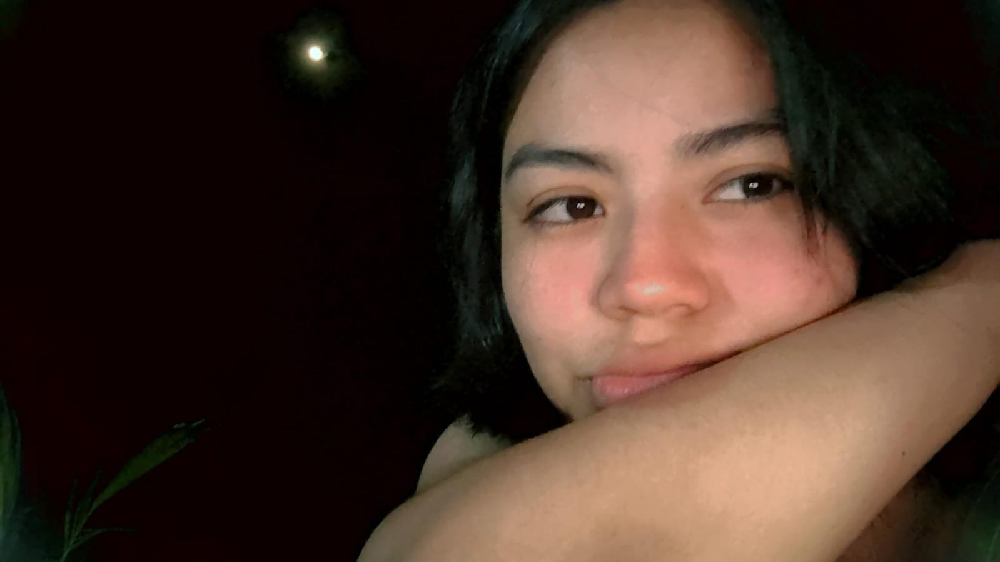

Esta página es para ti, para que recuerdes lo especial e importante que eres para mi.
Te amo por todo lo que eres 💕
No te amo por cómo luces, aunque eres hermosa. Te amo por cómo me haces sentir, por cómo rÃes, por cómo me miras. Me haces sentir que soy la persona más afortunada del mundo.
Tu ternura, tu forma de hablar, lo que sueñas... todo eso me enamora cada dÃa más.
Cuando te sientas mal 🌧️
Quiero que sepas que incluso en tus dÃas más grises, tú sigues siendo luz para mÃ.
Lo especial que eres 🌸
Tu forma de ser, tu voz, tu presencia... hacen del mundo un lugar más bonito. No dejes que nada te haga dudar de tu valor.
Tu risa es sol en la mañana,
tu mirada, la paz que sana.
Eres belleza sin final,
mi universo emocional.Tus ojos tienen la magia
de un cielo en calma, sin prisa.
Y en tu rostro, cada dÃa,
nace el arte de mi sonrisa.No hay flor que te supere,
ni luna que te iguale.
Tú eres lo que uno quiere,
belleza que no se sale.Eres más que un reflejo,
eres fuego y ternura.
Lo tuyo no es solo cuerpo,
es alma pura y dulzura.Tu forma de ver el mundo
es más bella que tu piel.
Y ya eso es decir tanto…
porque tú eres todo bien.Eres poema sin rima,
melodÃa sin final.
Lo que en mi pecho se anima,
mi razón más celestial.Si el sol supiera tu nombre
saldrÃa solo a verte.
Porque en ti hay tanta luz
que hasta el dÃa se convierte.No hay espejo que te atrape,
ni retrato que te encierre.
Eres más que una imagen:
eres amor que no muere.Tu belleza es como el viento:
no se ve, pero se siente.
Está en tu forma de amar
y en tu corazón valiente.Las flores quieren ser tú,
los suspiros, tus aliados.
Porque tienes la virtud
de dejarme enamorado.No hay estrella que te iguale,
ni universo que compita.
Tu belleza es tan real
que en mi alma se repita.Me enamoran tus silencios,
tu dulzura tan sincera.
Porque tú, mi niña bella,
eres todo lo que espera.Hasta el arte se sonroja
cuando pasas tú cerquita.
Y es que tú eres la joya
que mi destino necesita.Tu sonrisa vale el mundo,
tu mirada, mil canciones.
Eres un poema profundo
escrito en mis emociones.
Tu hermosura no está en ropa,
ni en maquillaje, ni en poses.
Está en cómo me tocas
con tus gestos tan hermosos.Te amo mi niña ♥️💞
Un poema solo para ti ✨
Eres el suspiro que calma mis dÃas,
la luz que disuelve mis noches frÃas,
el abrazo que sana toda herida,
mi motivo, mi risa, mi alegrÃa. 💫
Si un dÃa dudas de tu belleza,
recuerda que eres arte en esencia,
porque al verte, el mundo suspira,
y mi corazón... te admira. ❤️
Escribe un mensaje para ti 💌
¡Juega un rato! 💖
Haz clic en los corazones que caen para sumar puntos.
Puntos: 0
Bienvenida, hermosa 💖
Greverly, recuerda que eres increÃble y que siempre te amo.